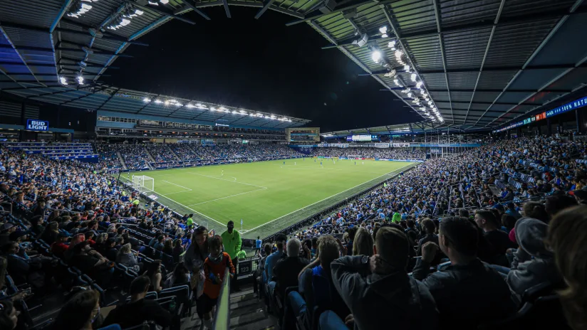

Welcome to the Sporting KC Page
Sporting Kansas City is a professional soccer team based in Kansas City, Missouri, and is one of Major League Soccer’s (MLS) founding members. Originally established in 1995 as the Kansas City Wiz, the team was one of the first to join MLS when the league began play in 1996. The club's name was changed to Kansas City Wizards in 1997, a name that remained until 2011, when the franchise rebranded as Sporting Kansas City to reflect a new era of success and a broader vision for the club's identity. The team initially struggled to find its identity in the early years of the league, but they found success in 2000, winning the MLS Cup for the first time in franchise history. The Wizards also won the U.S. Open Cup in 2004 and 2012, establishing themselves as competitive players in MLS during those years. However, the club’s name and branding were seen as lacking a clear, modern identity.
In 2011, the franchise took a bold step by changing its name to Sporting Kansas City to align with European soccer traditions and to symbolize a new era of success and ambition. That same year, the team moved into the newly constructed Children's Mercy Park (formerly known as Livestrong Sporting Park) in Kansas City, Kansas. The stadium, widely praised for its fan-friendly atmosphere and modern amenities, became the new home for the team and helped elevate Sporting KC’s profile within MLS.
The Cauldron
Kansas City is often referred to as the soccer capital of the country and the fanbase sure lives up to that standard. The Cauldron is the passionate, loyal supporters' group for Sporting Kansas City, known for creating one of the most energetic and electric atmospheres in Major League Soccer (MLS). Located primarily in the South Stand of Children's Mercy Park, the Cauldron has been a cornerstone of Sporting KC's fan culture since the team's early days in 1996. With their signature chants, flags, banners, and coordinated support, the Cauldron brings unmatched energy to every match, and its presence is a key factor in making the home field an intimidating venue for visiting teams
Special Teams, Special Plays, and Special Players
The buildup to Sporting Kansas City's 2013 MLS Cup was shaped by years of near-misses and hard-fought playoff exits. After falling short in the 2011 and 2012 playoffs, Sporting KC was determined to finally claim the league’s ultimate prize. Key players like Aurelien Collin, Graham Zusi, Benny Feilhaber, and Matt Besler were crucial to the team’s success. Collin’s strong defending and leadership, Zusi’s creative playmaking, Feilhaber’s midfield vision, and Besler’s steady presence at the back were central to the squad's effectiveness. The team’s journey to the final also saw standout performances from goalkeeper Jimmy Nielsen, whose leadership and key saves were vital throughout the playoffs. The final match against Real Salt Lake was a tense affair, ending 1-1 before KC triumphed in a dramatic penalty shootout. This win marked Sporting KC’s first MLS Cup since 2000, solidifying the team’s place at the top of Major League Soccer